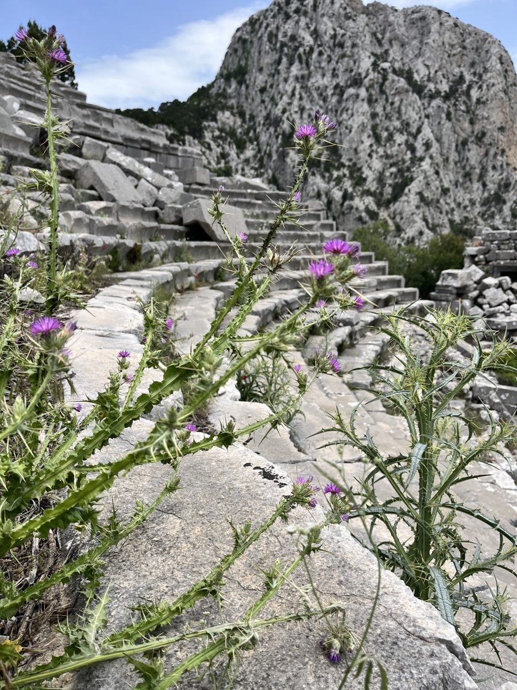

a chapter from The Wind Girl · Friendsgiving
🏔️ The Ridge
Imperfectly matching,
they complete you perfectly
🥂 Setting the mood
Before any of this, let me set the mood with a scene I love, from an old film
A brother stands by his sister. She has too many children, a husband who drinks and barely earns, a hard life. He doesn't lecture her. He teases her, makes her laugh right in the middle of it. They pour a small glass, and she asks him to swear on it. Benjamin swears by her little son, Varlam
“I swear by Varlam”
“Why by me?” little Varlam pipes up. “Is there really no one but me?”
— Don't Grieve!, dir. Georgiy Daneliya 🍿
That is the humor that holds people together: the roof leaks, the children are ungrateful, and still you pour a glass and laugh and swear on each other's name. Because in the end there really is no one but each other
This piece is about what happens when we forget that
🕯️ Prologue · Friendsgiving
The fourth Thursday of November. Outside, other houses are full: long tables, too many chairs, the smell of something roasting. Hers is quiet
She is a little sick, a little tired. She has cooked for one: ground meat, squash, peppers, cabbage, all cooked down together in one pan, warm in a white bowl on a paper napkin. A candle. The window dark
one bowl,
one candle,
many plates in my mind
They call this week Friendsgiving, the day you gather the people who became family. She has no table to sit at tonight. So she does the only thing she can: she sets a place in her mind for each of them, the way you lay out plates
Her friends and her two sisters are scattered — across oceans, or on the far coast of this same continent. Not one of them is here with her tonight. And still, somehow, they all are
🍃 Ayla, the breeze

Turkish sun, slow mornings 🌺
The office is cold in the way some offices are cold. Not the air. The people
Ayla was the first warmth. She never asked what's wrong? She came over with two cups of tea, told her a recipe her family makes on slow mornings, talked about her father, who was unwell and far away. She could see the needles pinned inside Wind Girl, every one, and she didn't try to pull them out. She just stayed, moving slowly around her, until the cold began to lift
“Don't expect too much from people,” Ayla said once, almost in passing. “Life gets lighter”
a breeze doesn't push 🍃
Ayla is a breeze. She doesn't push. She wraps around you like a blanket, and she turns toward the light in people and names it out loud, as if it had always been obvious
⛈️ Bess, the weather you lean into
«Не горюй!», Георгий Данелия, 1969 · © Мосфильм
Fifteen years of Bess
Where Ayla is a breeze, Bess is weather you can lean into. Solid, sure of her own mind, she does not bend her line to make a room comfortable. “I'm not going to sugarcoat it,” she likes to say, and she doesn't
Her advice rarely fit Wind Girl's life. You're too soft. Why leave at all? You quit too fast. You, a mathematician? Go to law school. Most of it Wind Girl couldn't follow. But it helped anyway, backwards: Bess held up each road Wind Girl would never take, and in refusing it, Wind Girl saw her own more clearly
There was a rupture once — a missed flight, a long silence, words that landed on the person and not the problem. For a while Wind Girl let the open, loving friend she'd been with Bess rest, the way you close a door softly on a room you still love but can't sit in. Not hatred. Just distance
not two people who agreed,
two people who stayed
But underneath it all, Bess listened. Every time. She never once walked away from the phone. That is the friendship: not two people who agreed, but two people who stayed
🧡 Dana, love through doing

the little orange figure, still on me 🧡
Then there is Dana, from the first day of university, a brown top and a sure chin, who scanned the whole room and chose: I'll sit with her
Dana does not say I missed you. She says we should go somewhere — and that is the same sentence, in her language. She knows the price of everything and wastes nothing. Her love arrives as a made bed, a plate of meat, a door closed so the heat stays out. On a dark beach once she said film me walking to the ocean, isn't this happiness — reaching, a little clumsily, for a joy she felt but couldn't quite give herself over to completely
we should go somewhere
= I missed you
She bought Wind Girl a string of beads once, an orange little figure threaded in them. This is you, to me, she said. Wind Girl didn't understand it, and wore it anyway. Some love you don't translate. You just put it on
Dana feels less, maybe. But when Wind Girl's energy fell on the road and she went quiet and grey, it was Dana who turned, suddenly warm, and carried her the rest of the way
⛰️ The ridge

nothing here is symmetrical
Once, in May, Wind Girl climbed a mountain alone
Nothing at the top was symmetrical. Not one tree stood straight. A river ran around a boulder, not fighting it, going around, and on the far side the water was louder and brighter for the rock
“The river needs the rocks,” said the Wind. “Without them it would have no song”
She thought of them then. Ayla, the breeze, who loves too softly to wound. Bess, the weather, who loves too hard, and tells the truth like a stone. Dana, the steady ground, who loves by doing and cannot say it in words. And her sisters, across the water, who love her in their own keys too. So different. Not one of them a copy of the other. All of them part of the same landscape
imperfectly matching,
perfectly complete ⛰️
Friendship is like this ridge. Rough, uneven, full of fallen trees nobody has cleared. You climb over things. You get resin on your hands. Imperfectly matching, they complete you perfectly
🍵 Friendsgiving, again

across the oceans
The bowl is empty now. The candle is lower
She is alone, and she is not. A breeze in one place, weather in another, steady ground in a third, and two sisters across the oceans. Women who would each love her in a completely different language, and all of it, somehow, the same thing
She lifts her tea, to the empty chairs that are not empty
Happy Friendsgiving, she tells them
And across the distance, though none of them can hear it, the Wind carries it anyway
🥧 Thanksgiving
a warm table · Георгий Данелия · © Мосфильм
Eleven years in this country, and she has never once had the Thanksgiving people mean when they say the word. The warm one. The one where you are not a guest being introduced, not the one who had to work the shift, not the one someone talks about in the third person at her own table. You know how she is
Some years she stood at a grocery register while they drove off without her. That's good, he said, you'll get time-and-a-half. Some years she sat at a beautiful table and felt the quiet distance of a family being polite. Some years she simply worked, and studied, and worked, and the holiday passed like weather outside a window
One year there was a man who did take her out that morning. Come, I'll surprise you, he said. Two subway stops, a strip of trees between two roads, not really a park. They walked. And somewhere along the way it came out: he needed to pick up a sweet potato pie. For his family. For the table she was not invited to
That was the whole outing. She had been folded into an errand, carried along the way a pie is carried. He would bring her the leftovers later, and tell her how dull it had been without her. She spent that evening alone in her pajamas, a film she wasn't watching, crying. You know how she is, the world seemed to say about her, at every table but her own
my own warmth,
my own table 🕯️
So this year she decided something small. She would stop waiting to be invited into someone else's warmth. She would make her own. A bowl of food she cooked herself. A candle. A blanket. One place at the table, hers
It is not the Thanksgiving she dreamed of. Not yet. But for the first time, no one at this table makes her feel like an empty chair. And the friends and sisters scattered across the oceans, and across to the other coast, are here in a way the people in those bright houses never were
This is a Friendsgiving. And the family she is thankful for is the one that chose her back
🤍 Қорытынды · on friendship
Дос деген — алыста болса да, жүрегіңнің жылуын сезетін адам.
Ол сені мақтамаса да, қиналғанда қасыңда қалады.
Біреуі — жұмсақ жел, біреуі — қатты дауыл, біреуі — берік жер.
Үшеуі де сүйеді, тек әрқайсысы өз тілінде.
Бүгін — Алғыс айту күні. Мен алыстағы достарым мен әпкелерімді ойлаймын.
Әрқайсысы — жүрегімдегі бір жылы шуақ
🍬 You want a candy?
«Не горюй!», Георгий Данелия · © Мосфильм
There is one small moment she loves, and it makes her laugh every time. One friend turns to the other and asks, You want a candy? The other lights up: Of course! And then, straight-faced: There isn't any
— Don't Grieve! (Не горюй!), dir. Georgiy Daneliya 🍿
That's all. A tiny prank between friends. No candy at all. And somehow it is the warmest thing in the world, because the candy was never the point. The point was the two of them, together
You want a candy? — Of course, she says, to the empty, un-empty room. That is the table she is thankful for
🎬 two films about friendship and mountains
«Не горюй!», Георгий Данелия, 1969 · watch on YouTube →
«Мимино», Георгий Данелия, 1977 · watch on Mosfilm's channel →
short clips used for commentary, all rights © Mosfilm · song: «How It Ends», DeVotchKa
if this touched you, leave a heart 🤍
tap as many times as you like
thank you, your note reached me 🤍